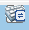

功能介绍
通过使用Java集成远程控制台提供的功能，您可以远程连接到服务器完成远程控制、管理服务器，安装、修复操作系统或安装设备驱动程序等操作。
- 您可以在本地PC上利用键盘和鼠标对远程的服务器进行远程实时操作。
- 您可以通过网络使服务器以虚拟软驱或光驱的形式实现对本地PC的远程访问。从服务器一侧看，虚拟软驱或光驱与实际插入服务器的（USB，Universal Serial Bus）设备的使用方法相同。
“KVM”窗口中的按钮及其作用如表1所示。
按钮 |
说明 |
|---|---|
|
浮动按钮。表示当前工具栏被固定。 |
|
浮动按钮。表示当前工具栏被隐藏。 |
|
“全屏”按钮。表示全屏显示服务器的实时桌面。 说明：
在全屏显示实时桌面时，鼠标移动到屏幕上方会显示工具栏。 |
|
“鼠标同步”按钮。表示纠正鼠标位置。 说明：
在全屏显示实时桌面且“鼠标控制”为“单鼠标”模式时，此时单击“切换鼠标模式”后，该按钮才可用。 |
|
“切换鼠标模式”按钮。表示切换鼠标模式。 说明：
在全屏显示实时桌面且在“单鼠标”模式下时，该按钮才可用。 |
|
“返回”按钮。表示返回合适的屏幕显示服务器的实时桌面。 说明：
只有全屏显示服务器的实时桌面时，工具栏中才会出现该按钮。 |
|
“控制”按钮。表示控制服务器电源。操作包括：
|
|
“录像”按钮。表示对远程实时操作进行录像。 |
|
“鼠标控制”按钮。表示控制服务器鼠标。操作包括：
默认的操作：鼠标加速 说明：
|
|
“光驱”按钮。表示选择并使用虚拟光驱。 说明：
虚拟光驱和虚拟软驱属于复合设备，当连接虚拟光驱时，服务器会同时识别到一个无介质的虚拟软驱设备。按照正常操作方式可继续使用虚拟软驱功能。 |
|
“软驱”按钮。表示选择并使用虚拟软驱。 说明：
虚拟光驱和虚拟软驱属于复合设备，当连接虚拟光驱时，服务器会同时识别到一个无介质的虚拟软驱设备。按照正常操作方式可继续使用虚拟光驱功能。 |
|
“制作镜像文件”按钮。表示使用光驱或软驱制作镜像文件。 |
|
“键盘组合键”按钮。表示发送或自定义特殊组合键。该窗口中的组合键及其含义包括：
说明：
在不同的操作系统中，操作系统各自定义的组合键及其含义不同。该窗口中的组合键及其含义仅适用于Windows操作系统。 |
 |
“键盘布局”按钮。表示客户端的键盘类型。默认情况下，BMC自动适配客户端的键盘类型。当自适应模式下键盘适配情况不理想时，请强制指定目标键盘类型。
|
图像清晰度 |
“图像清晰度”游标图标。表示调节远程实时图像的清晰度。 |
|
“Num Lock”（数字键盘开关）键的指示灯。表示当前服务器上“Num Lock”键的指示灯状态。 |
|
“Caps Lock”（键盘大写锁定）键的指示灯。表示当前服务器上“Caps Lock”键的指示灯状态。 |
|
“Scroll Lock”（键盘滚动锁定）键的指示灯。表示当前服务器上“Scroll Lock”键的指示灯状态。进入Linux字符模式，如果按下了Ctrl+s（大多数情况下属于误摁），此时屏幕会锁住，按下键盘上的“Scroll Lock”键可以解锁屏幕。 说明：
|
|
“帮助”按钮。表示查看KVM页面联机帮助。 |
注：不同型号的服务器，提供的功能不完全相同，请以实际界面为准。 |
|


界面描述
在上方标题栏中选择“首页”，在“启动虚拟控制台”右侧的下拉列表中选择“Java集成远程控制台(独占)”或“Java集成远程控制台(共享)”，跳转至“KVM”页面。

单击“Java集成远程控制台(共享)”的情况下，本用户可以看到对方用户的操作，对方用户也能看到本用户的操作，有一定安全风险。
Java KVM窗口各区域的功能介绍如表2所示。
操作步骤
发送特殊组合键
- 在“KVM”界面中，单击工具栏上的
 。
。弹出组合键窗口。
- 根据表1提供的参数信息，单击需要发送的组合键。
服务器将执行组合键对应的操作。
如果您需要自定义组合键，请在“自定义”后的文本框中依次输入按键，然后单击“发送”。
指定客户端的键盘类型
在“KVM”界面中，单击工具栏上的。从下拉列表中选择目标键盘类型。则成功强制指定键盘类型。
挂载虚拟光驱
本操作使用本地PC上的光盘驱动器虚拟出另一个光盘驱动器提供给服务器。
- 在“KVM”界面中，单击工具栏上的
 。
。
- 选中“光驱”单选按钮。
- 在下拉列表中，选择本地PC上待虚拟的光盘驱动器，例如“G:”。
- 单击“连接”。
服务器上成功挂载虚拟光驱。
挂载成功后，单击“断开”，在弹出的“选择一个选项”对话框中单击“是”，卸载服务器上的虚拟光驱。
通过虚拟光驱挂载镜像文件
本操作使用本地PC上的光盘镜像文件虚拟出另一个光驱提供给服务器，并将光盘镜像文件加载到该虚拟光驱中。
- 在“KVM”界面中，单击工具栏上的。
- 选中“镜像文件”单选按钮。
- 单击“浏览”。
弹出“打开”窗口。
- 选择本地PC上存放的光盘镜像文件，单击“打开”。
- 单击“连接”。
服务器上成功挂载镜像文件。
- 挂载镜像文件成功后，单击“弹出”，弹出镜像文件；弹出镜像文件后，可重新选择其他“*.iso”格式的镜像文件，然后单击“插入”，加载该镜像文件。
- 挂载镜像文件功后，单击“断开”，在弹出的“选择一个选项”对话框中单击“是”，卸载服务器上的虚拟光驱。
挂载虚拟软驱
本操作使用本地PC上的软驱或软盘镜像文件虚拟出另一个软驱提供给服务器。
- 在“KVM”界面中，单击工具栏上的
 。
。
- 选中“软驱”单选按钮。
- 在下拉列表中，选择本地PC上待虚拟的软盘驱动器，例如“A:”。
- 勾选“写保护”复选框。
写保护是指软驱禁止写入数据。它是一种防止重要数据被更改或被删除的保护机制。
- 单击“连接”。
服务器上成功挂载虚拟软驱。
挂载成功后，单击“断开”，在弹出的“选择一个选项”对话框中单击“是”，卸载服务器上的虚拟软驱。
通过虚拟软驱挂载镜像文件
本操作使用本地PC上的软盘镜像文件虚拟出另一个软驱提供给服务器，并将软盘镜像文件加载到该虚拟软驱中。
挂载的镜像文件大小必须为1.44MB，否则会导致挂载失败。
- 在“KVM”界面中，单击工具栏上的。
- 选中“镜像文件”单选按钮。
- 单击“浏览”。
弹出“打开”窗口。
- 选择本地PC上存放的软盘镜像文件，单击“打开”。
- 单击“连接”。
服务器上成功挂载镜像文件。
- 挂载镜像文件成功后，单击“弹出”，弹出镜像文件；弹出软盘镜像文件后，可重新选择其他“*.img”格式镜像文件，然后单击“插入”，挂载该镜像文件。
- 单击“断开”，在弹出的“选择一个选项”对话框中单击“是”，卸载服务器上的虚拟软驱。
制作镜像文件
本操作使用软驱或光驱中的软盘或光盘制作镜像文件。制作成功的镜像文件保存在本地PC上。它可以用于挂载和加载虚拟软驱或光驱。
执行本操作前请确保本地PC上的软驱或光驱中已插入了软盘或光盘。
- 在“KVM”界面中，单击工具栏上的。
- 在“选择驱动”下拉列表中，选择客户端的软盘驱动器或光盘驱动器。
- 单击“浏览”。弹出“保存”窗口。
- 选择镜像文件在PC上的保存路径，并在“文件名：”文本框中输入镜像文件的名称。
系统只支持制作“*.iso”格式的光盘镜像文件和“*.img”格式的软盘镜像文件。
- 单击“保存”。
- 单击“制作”。
制作完成后，系统弹出窗口提示成功制作镜像文件。
在“制作进度”一栏将显示镜像文件的制作百分比。
制作过程中，单击“停止”可以终止制作镜像文件。
挂载虚拟文件夹
本操作将本地PC上的文件夹挂载到服务器，使服务器系统可以以只读方式访问本地文件夹。

在挂载虚拟文件夹之前，请先把要传输的文件拷入目标文件夹中。虚拟文件夹挂载后，不可对其进行添加或删除文件的操作。
- 在“KVM”界面中，单击工具栏上的。
- 选中“本地文件夹”单选按钮。
- 单击“浏览”。
打开本地文件夹选择窗口。
- 选择要挂载的本地文件夹，单击“打开”。
- 单击“连接”。
- 连接成功后，在服务器操作系统中，可以看到虚拟文件夹。您可以从此文件夹中直接拷贝文件。
- 连接成功后，单击“断开”，可以卸载虚拟文件夹。
为服务器上电
- 在“KVM”界面中，单击工具栏上的
 ，在快捷菜单中选择“上电”。
，在快捷菜单中选择“上电”。弹出“选择一个选项”对话框。
- 单击“确定”。
服务器开始上电。
服务器上电的时间根据服务器配置所不同。
为服务器下电
- 请在下电前确认无中断当前业务风险。
- 请根据实际情况选择下电方式，“强制下电”和“下电”的区别请参考BMC用户指南的章节。
- 在“KVM”界面中，单击工具栏上的，在快捷菜单中选择“强制下电”或“下电”。
弹出“选择一个选项”对话框。
- 单击“确定”。
服务器开始下电。
强制重启或强制下电再上电
- 强制重启或强制下电再上电可能会损坏用户的程序或者未保存的数据，请根据操作系统实际情况谨慎选择操作方式。
- 请在强制重启或强制下电再上电前确认无中断当前业务风险。
- 请根据实际情况选择“强制重启”或“强制下电再上电”，“强制重启”和“强制下电再上电”的区别请参考BMC用户指南的章节。
- 在“KVM”界面中，单击工具栏上的，在快捷菜单中选择“强制重启”或“强制下电再上电”。
弹出“选择一个选项”对话框。
- 单击“确定”。
服务器开始强制重启或强制下电再上电。
服务器强制重启或强制下电再上电的时间根据服务器配置所不同。
键鼠复位
本操作模拟插拔USB键盘和USB鼠标。
- 在“KVM”界面中，单击工具栏上的，在快捷菜单中选择“键鼠复位”。
弹出“选择一个选项”对话框。
- 单击“确定”。
服务器开始执行USB复位操作。
为实时桌面录像
本操作对当前远程虚拟控制台显示的画面进行录像。
- 在“KVM”界面中，单击工具栏上的
 。
。弹出“选择一个选项”对话框。
- 单击“确定”。
弹出“保存”窗口。
- 选择将要录制的录像文件在PC上的保存路径，并在“文件名：”文本框中输入录像文件的名称。
- 单击“保存”。
返回“KVM”界面并开始录制录像。
- 录制完成后，单击
 。
。弹出“选择一个选项”对话框。
- 单击“确定”。
录像文件被保存到指定的路径。
录制的录像文件格式为“*.rep”。可在“录像回放”界面中播放录像文件。
使用单鼠标
- 如果本地PC上的鼠标与实时桌面上的不同步，您可以使用单鼠标功能隐藏本地PC上的鼠标。“KVM”界面中只保留实时桌面上的鼠标。
- 在“KVM”界面中，单击工具栏上的，在快捷菜单中选择“单鼠标”。
弹出“选择一个选项”对话框。
- 单击“确定”。
“KVM”界面中只显示实时桌面上的鼠标。
加速远程鼠标
本操作对实时桌面上的鼠标进行加速，使其与本地PC上的鼠标同步。
- 在“KVM”界面中，单击工具栏上的，在快捷菜单中选择“鼠标加速”。
弹出“选择一个选项”对话框。
- 单击“确定”。
同步本地PC与服务器的鼠标。